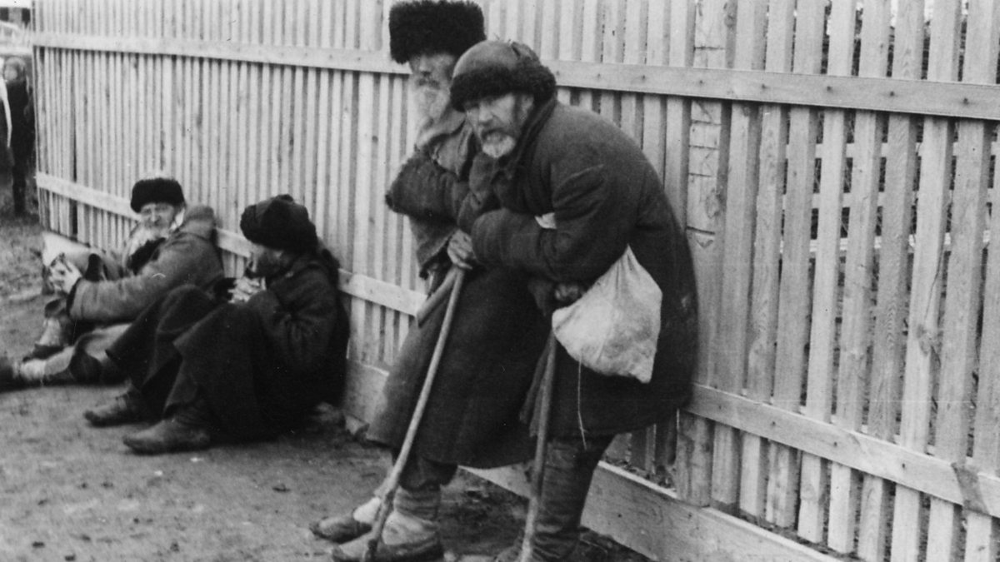

Sztálin
Joszif Visszarionovics Dzsugasvili 1878-ban látta meg a napvilágot. Eredetileg ortodox papnak tanult, ám mint tudjuk, ez nem így lett. Megismerkedet a marxista eszmékkel. Sztálin gyorsan mászott fel a hatalmi ranglétrán. 1918-ra már a Központi Bizottság egyik legfontosabb tagja lett. 1922-ben ő lett a pártfőtitkár. A Lenin halálát követő hatalmi harcokból győztesen került ki. 1928-ban megkezdődött az első ötéves terv és az ész nélküli iparosítás. A mezőgazdaság teljes elhanyagolása nagy éhínségekhez vezetett a Szovjetunió több részében is. Például Ukrajnában is. Emelett az ukránoknál addig folytatott politika, ami az ukrán nemzettudatot erősítette ijesztővé vált a szovjet vezetés szemében. Ezért az ukrán mezőgazdaságot nagy mértékben kezdték államosítani. Az éhezés ideje alatt pedig elvitték a nemzet gabonáját. (Tudj meg többet Sztálin életéről)
A kulákokat(vagyonosabb, vagy gabonarejtegetéssel megvádolt parasztok) elkezdték gulágokba küldeni. Ez 1930-31-ben kb. 300.000 főt jelentett, ami az ukrán lakosság 1%-a. 1932-ben nem tudták megtermelni a kormány általt elvárt gabonamennyiséget(91 millió tonna). Ehelyett "csak" 55-60 millió tonnát sikerült betakarítani. Ennek hatására 103.000 embert ítéltek el. Közölük kb. 5000 főt végeztek ki. Az újonnan bevezetett jogszabályok szerint azoknak az ukrán falvak, amik nem tudták teljesíteni az előírt gabonamennyiséget, nem adtak ellátást sem élelemből, sem másból. A náluk lévő gabonát, pénzt elvették, a kereskedést megtiltották.

Ez volt a holodomor, az ukrán nép történetének egyik legnagyobb katasztrófája. Az éhínséget nem aszály okozta(mint 1921-22-ben), nem a háború(mint 1947-ben), hanem Sztálin és a szovjet vezetés döntései. A gabonát például az élelemhiány ellenére külföldre adták el. Az éhezést persze próbálták tagadni. Nem engedték be az újságírókat az éhező területekre, illetve onnan sem távozhatott senki. A küldött segítég csak a munkaerő életbentartása miatt érkezett.

Az éhezés halálos áldozatainak számát 3,5-7,5 millió fő közé teszik. Bár Sztálin ennél több emberrel végzett országában hasonló módokon(gulágok, politikai tisztogatás, döntései által okozott éhínség), de az ukránoknál egyesek szerint szándékosan és célzottan tette mindezt. Összes áldozatának számát mintegy 23 millió főre teszik.